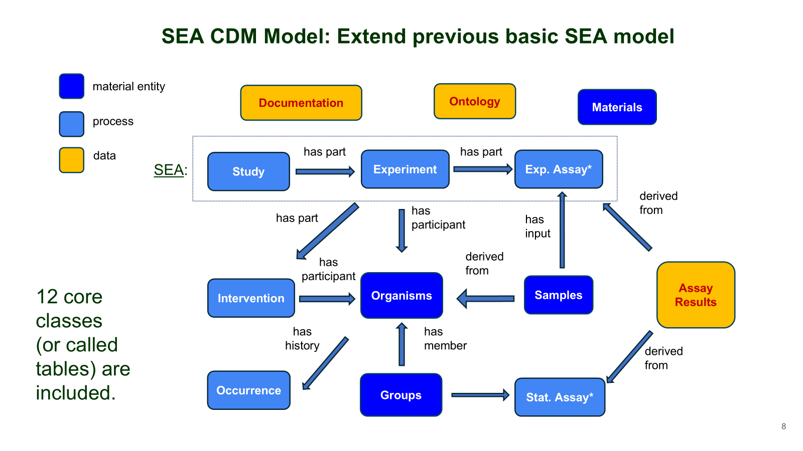

SEA-CDM
SEA-CDMis a flexible data model designed to represent complex biological studies across multiple domains. Developed by the He lab at the university of Michigan, SEA-CMD enable seamless integration of study metadata, experimenta; data and assay outputs. Explore the visual repesentatiom of the SEA -CDM below to see how it supports interoperability and structured biological research
